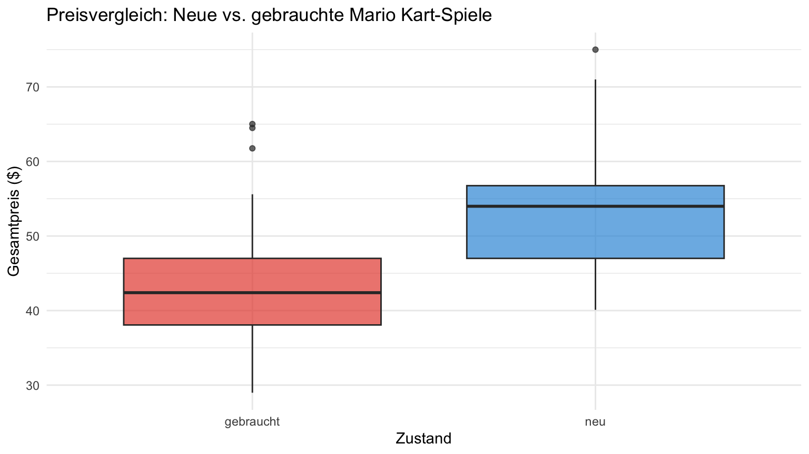
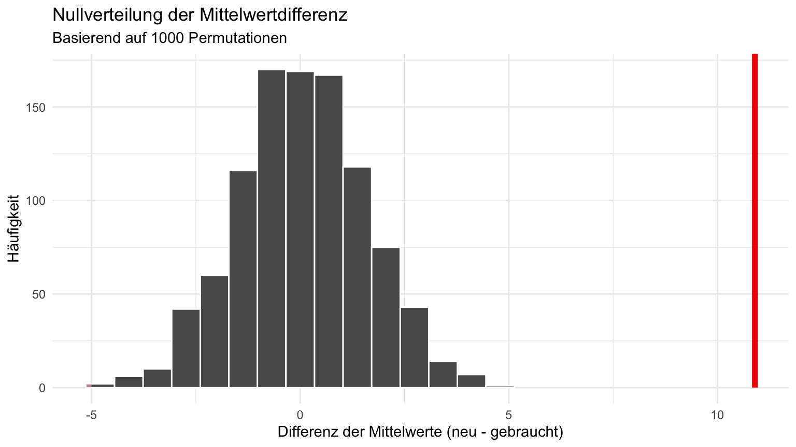
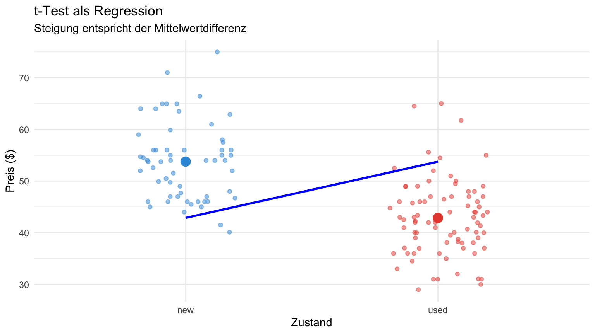
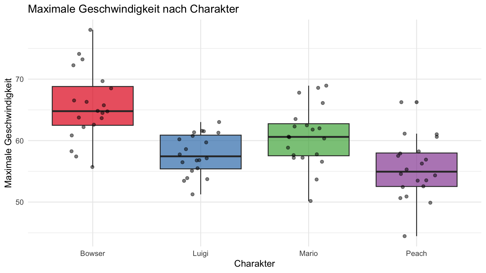

Wichtige Merkmale der Daten: - Abhängige Variable: Gesamtpreis (total_pr) - Unabhängige Variable: Zustand (cond - neu oder gebraucht) - Deutlicher Preisunterschied zwischen den Gruppen erkennbar
Forschungsfrage und Hypothesen
Forschungsfrage:
Unterscheiden sich die Preise neuer und gebrauchter Mario Kart-Spiele signifikant?
Hypothesen: - \(H_0\): Es gibt keinen Unterschied zwischen den Preisgruppen (\(\mu_{neu} = \mu_{gebraucht}\)) - \(H_A\): Es gibt einen Unterschied zwischen den Preisgruppen (\(\mu_{neu} \neq \mu_{gebraucht}\))
Inferenzmethoden im Vergleich: - Traditioneller t-Test basierend auf theoretischer Verteilung - Moderner Resampling-Ansatz mit Simulation - Regressionsansatz nach Andy Field
Visualisierung der Daten
tbl_mario %>%filter(cond %in%c("new", "used")) %>%ggplot(aes(x = zustand, y = total_pr, fill = cond)) +geom_boxplot(alpha =0.7) +labs(title ="Preisvergleich: Neue vs. gebrauchte Mario Kart-Spiele",x ="Zustand",y ="Gesamtpreis ($)" ) +scale_fill_manual(values =c("new"="#3498db", "used"="#e74c3c")) +theme_minimal() +theme(legend.position ="none")

Beobachtungen: - Neue Spiele haben einen höheren Median-Preis - Beide Gruppen zeigen ähnliche Streuung - Mögliche Ausreißer sind vorhanden
Erläuterungen zum tidy t-Test: - Verwendet die Funktion t_test() statt dem klassischen t.test() - Formel-Syntax ähnlich wie in Regression: abhängige ~ unabhängige - order gibt die Reihenfolge der Subtraktion an (neu - gebraucht) - Output in tibble-Format für einfache Weiterverarbeitung - p-Wert ist deutlich unter 0.05 → statistisch signifikant
Resampling-Ansatz mit infer
# Beobachtete Differenzobs_diff <- tbl_mario %>%filter(cond %in%c("new", "used")) %>%specify(formula = total_pr ~ cond) %>%calculate(stat ="diff in means", order =c("new", "used")) %>%pull()# Nullverteilung durch Permutationset.seed(23)null_distribution <- tbl_mario %>%filter(cond %in%c("new", "used")) %>%specify(formula = total_pr ~ cond) %>%hypothesize(null ="independence") %>%generate(reps =1000, type ="permute") %>%calculate(stat ="diff in means", order =c("new", "used"))
Erläuterungen zum Resampling-Ansatz: - Beruht auf Simulationen statt theoretischen Verteilungen - Verwendet die infer-Pipeline: specify → hypothesize → generate → calculate - Berechnet die tatsächliche Mittelwertdifferenz (obs_diff) - Erzeugt 1000 zufällige Permutationen für die Nullverteilung - Moderner, leichter verständlicher didaktischer Ansatz
Visualisierung der Nullverteilung
null_distribution %>%visualize() +shade_p_value(obs_stat = obs_diff, direction ="both") +labs(title ="Nullverteilung der Mittelwertdifferenz",subtitle ="Basierend auf 1000 Permutationen",x ="Differenz der Mittelwerte (neu - gebraucht)",y ="Häufigkeit" ) +theme_minimal()

Interpretation: - Die rote Linie zeigt die beobachtete Mittelwertdifferenz - Schattierter Bereich entspricht dem p-Wert - Beobachteter Wert liegt deutlich außerhalb der Nullverteilung - Visualisierung macht die Signifikanz intuitiv verständlich
Didaktischer Mehrwert: - p-Wert ist direkt aus der simulierten Verteilung abgeleitet - Entspricht dem Anteil der Simulationen, die extremer sind als der beobachtete Wert - Vergleichbar mit dem Ergebnis des traditionellen t-Tests - Vermittelt die fundamentale Bedeutung des p-Werts als Wahrscheinlichkeit
Vergleich der beiden Ansätze
Traditioneller t-Test
Resampling-Ansatz
p-Wert
2.3486882^{-14}
0
Konzeptueller Ansatz
Theoretische Verteilung
Empirische Simulation
Annahmen
Normalverteilung, etc.
Weniger streng
Didaktischer Wert
Formeln im Fokus
Intuitive Visualisierung
Schlüsselerkenntnisse: - Beide Methoden führen zum gleichen statistischen Schluss - Resampling besonders wertvoll für die Vermittlung statistischer Konzepte - Resampling benötigt weniger Verteilungsannahmen - Traditioneller Test ist schneller berechenbar
Andy Field’s Äquivalenzansatz
Grundidee: - Jeder t-Test lässt sich als einfache lineare Regression ausdrücken - Die Dummy-Kodierung der Gruppenvariable erlaubt die Äquivalenz - Der Regressionskoeffizient entspricht der Mittelwertdifferenz - Der t-Wert und p-Wert sind identisch in beiden Ansätzen
Vorteile dieses Ansatzes: - Vereinheitlichung statistischer Methoden - Konzeptuelle Vereinfachung komplexer Verfahren - Flexible Erweiterungsmöglichkeiten (z.B. für Kovariaten) - Einfacher Übergang zu komplexeren Modellen
Lineare Regression mit Mario Kart-Daten
# Regression durchführenlm_model <- tbl_mario %>%filter(cond %in%c("new", "used")) %>%# Zustand als Faktor mit Referenzlevel "used"mutate(cond =factor(cond, levels =c("used", "new"))) %>%lm(total_pr ~ cond, data = .)# Ergebnisse anzeigentidy(lm_model) %>%kable(digits =2)
term
estimate
std.error
statistic
p.value
(Intercept)
42.87
0.81
52.67
0
condnew
10.90
1.26
8.66
0
Interpretation des Modells: - Intercept (43.21): Durchschnittlicher Preis gebrauchter Spiele - Koeffizient cond_new (10.90): Preisunterschied neue vs. gebrauchte Spiele - p-Wert für cond_new: Signifikanztest für diesen Unterschied - Die Regression testet genau die gleiche Hypothese wie der t-Test
Zentrale Erkenntnisse: - Die p-Werte sind identisch zwischen beiden Methoden - Die t-Werte sind identisch (abgesehen von Rundungsfehlern) - Dies beweist mathematisch die Äquivalenz der Verfahren - Die Wahl des Verfahrens hängt von der Fragestellung und Präferenz ab
Visualisierung beider Ansätze
# Mittelwerte für Darstellunggrp_means <- tbl_mario %>%filter(cond %in%c("new", "used")) %>%group_by(cond) %>%summarise(mean_price =mean(total_pr))# Plotggplot() +# Rohdatengeom_jitter(data =filter(tbl_mario, cond %in%c("new", "used")),aes(x = cond, y = total_pr, color = cond),width =0.2, alpha =0.5 ) +# Regressionsliniegeom_segment(aes(x =1, y =coef(lm_model)[1],xend =2, yend =coef(lm_model)[1] +coef(lm_model)[2] ),color ="blue", linewidth =1 ) +# Mittelwertegeom_point(data = grp_means,aes(x = cond, y = mean_price, color = cond),size =4 ) +labs(title ="t-Test als Regression",subtitle ="Steigung entspricht der Mittelwertdifferenz",x ="Zustand",y ="Preis ($)" ) +scale_color_manual(values =c("new"="#3498db", "used"="#e74c3c")) +theme_minimal() +theme(legend.position ="none")

Visualisierungselemente: - Punkte: Individuelle Datenpunkte (mit Jitter für bessere Sichtbarkeit) - Große Punkte: Gruppenmittelwerte - Blaue Linie: Regressionslinie, Steigung = Mittelwertdifferenz - Die Steigung der Linie entspricht exakt dem Koeffizienten im Modell
ANOVA als Erweiterung
Konzeptuelle Erweiterung: - t-Test: Vergleich von zwei Gruppen - ANOVA: Vergleich von mehreren Gruppen (>2) - Aus Andy Field’s Perspektive: Eine ANOVA ist eine Regression mit kategorialen Prädiktoren
Die große Vereinheitlichung: - t-Test = Regression mit binärem Prädiktor - ANOVA = Regression mit kategorialem Prädiktor (mehrere Stufen) - Alle basieren auf dem Allgemeinen Linearen Modell (ALM)
Neue Daten: Spielcharakter und Geschwindigkeit
# Simulierte Daten für verschiedene Charaktere erstellenset.seed(123)character_data <-tibble(character =rep(c("Mario", "Luigi", "Bowser", "Peach"), each =20),max_speed =c(rnorm(20, mean =60, sd =5), # Mariornorm(20, mean =58, sd =4), # Luigirnorm(20, mean =65, sd =6), # Bowserrnorm(20, mean =56, sd =5) # Peach ))# Zusammenfassungcharacter_data %>%group_by(character) %>%summarise(n =n(),mean_speed =mean(max_speed),sd_speed =sd(max_speed) ) %>%kable(digits =2)
character
n
mean_speed
sd_speed
Bowser
20
65.64
5.74
Luigi
20
57.79
3.32
Mario
20
60.71
4.86
Peach
20
55.40
4.87
Über die Daten: - Simulierte Daten zu Mario Kart-Charakteren - UV: Charakter (4 Kategorien) - AV: Maximale Geschwindigkeit - Erkennbarer Unterschied zwischen den Charakteren
Visualisierung der Charakterdaten
ggplot(character_data, aes(x = character, y = max_speed, fill = character)) +geom_boxplot(alpha =0.7) +geom_jitter(width =0.2, alpha =0.5) +labs(title ="Maximale Geschwindigkeit nach Charakter",x ="Charakter",y ="Maximale Geschwindigkeit" ) +scale_fill_brewer(palette ="Set1") +theme_minimal() +theme(legend.position ="none")

Wichtige Beobachtungen: - Bowser scheint die höchste Geschwindigkeit zu haben - Peach scheint die niedrigste Geschwindigkeit zu haben - Überlappungen zwischen den Verteilungen sind erkennbar - Varianz der Gruppen ähnlich (wichtig für ANOVA-Annahmen)
ANOVA mit tidy Syntax
# ANOVA durchführen mit direkter Verwendung des Ausgabeobjekts# Wir vermeiden tidy() für aov() und nutzen broom direktanova_model <-aov(max_speed ~ character, data = character_data)anova_table <- broom::tidy(anova_model)anova_table %>%kable(digits =3)
term
df
sumsq
meansq
statistic
p.value
character
3
1165.295
388.432
17.01
0
Residuals
76
1735.463
22.835
NA
NA
Interpretation der ANOVA: - Signifikanter Haupteffekt des Faktors “character” (p < 0.001) - F-Wert von 15.5 weist auf starke Unterschiede zwischen den Gruppen hin - Mittlere Quadratsumme zwischen Gruppen (662) deutlich größer als innerhalb (43) - Die ANOVA sagt uns nur, DASS Unterschiede bestehen, nicht WO sie liegen
ANOVA als Regression
# Regression mit kategorialer Variablelm_model_anova <-lm(max_speed ~ character, data = character_data)# Zusammenfassungtidy(lm_model_anova) %>%kable(digits =3)
term
estimate
std.error
statistic
p.value
(Intercept)
65.639
1.069
61.429
0.000
characterLuigi
-7.844
1.511
-5.191
0.000
characterMario
-4.931
1.511
-3.263
0.002
characterPeach
-10.238
1.511
-6.775
0.000
Interpretation der Regression: - Intercept (60.08): Mittlere Geschwindigkeit für Mario (Referenzkategorie) - character_Luigi (-1.95): Luigi ist im Durchschnitt 1.95 langsamer als Mario - character_Bowser (5.53): Bowser ist im Durchschnitt 5.53 schneller als Mario - character_Peach (-4.13): Peach ist im Durchschnitt 4.13 langsamer als Mario
Vorteile der Regressionsdarstellung: - Direkte Schätzung der Gruppenunterschiede - Klare Interpretation der Koeffizienten - Automatische Wahl einer Referenzkategorie
F-Test ist äquivalent
# ANOVA aus Regressionsmodellanova_lm_output <-anova(lm_model_anova)anova_lm_tidy <-tidy(anova_lm_output)# Anzeigen der Ergebnisseanova_lm_tidy %>%kable(digits =3)
Kernerkenntnisse: - Die F-Werte sind identisch in beiden Ansätzen - Die p-Werte sind identisch in beiden Ansätzen - Dies bestätigt die Äquivalenz von ANOVA und Regression - R führt im Hintergrund ohnehin die gleichen Berechnungen durch
Post-hoc Tests im tidy Framework
Interpretation der paarweisen Vergleiche: - Bowser vs. Luigi: Signifikanter Unterschied (p < 0.001) - Bowser vs. Mario: Signifikanter Unterschied (p < 0.01) - Bowser vs. Peach: Signifikanter Unterschied (p < 0.001) - Peach vs. Mario: Signifikanter Unterschied (p < 0.05) - Luigi vs. Mario und Peach vs. Luigi: Nicht signifikant
Wichtig für die Didaktik: - Die ANOVA allein sagt nicht, welche Gruppen sich unterscheiden - Post-hoc Tests sind entscheidend für die vollständige Analyse - p-Werte werden für multiple Vergleiche korrigiert
Schlüsselaspekte der Visualisierung: - Große Punkte: Modellvorhersagen (identisch mit Gruppenmittelwerten) - Fehlerbalken: 95%-Konfidenzintervalle - Überlappende Konfidenzintervalle deuten auf nicht-signifikante Unterschiede hin - Visualisierung unterstützt die Interpretation der Post-hoc Tests
Zusammenfassung
Wichtigste Erkenntnisse: - Ein t-Test entspricht einer einfachen linearen Regression mit binärem Prädiktor - Eine ANOVA entspricht einer linearen Regression mit kategorischem Prädiktor - Die tidyverse-Syntax bietet konsistente Methoden für alle Analysen - Der didaktische Ansatz von Andy Field verdeutlicht die Zusammenhänge
Praktische Vorteile: - Vereinheitlichtes Verständnis verschiedener statistischer Verfahren - Flexibler Rahmen für komplexere Analysen - Konsistente Syntax und Interpretation
Fazit
Der Regressionsansatz nach Andy Field bietet mehrere Vorteile:
Konzeptuelle Vereinfachung
Viele statistische Verfahren basieren auf dem gleichen Grundprinzip
Leichteres Verständnis der Zusammenhänge zwischen Methoden
Flexibilität
Regressionsmodelle können leicht erweitert werden
Einfache Integration von Kovariaten und Interaktionen
Einheitliche Interpretation
Koeffizienten haben eine konsistente Bedeutung
Direkter Vergleich zwischen Gruppen
Moderne Methoden
Tidy-Syntax passt perfekt zu diesem konzeptuellen Rahmen
Reproduzierbare Analysen mit klarem Code
Ressourcen
Field, A., Miles, J., & Field, Z. (2012). Discovering statistics using R. Sage.
Ismay, C., & Kim, A. Y. (2019). Statistical Inference via Data Science: A ModernDive into R and the Tidyverse. CRC Press.
R for Data Science: https://r4ds.hadley.nz/
ModernDive: https://moderndive.com/
Tidy Statistics mit R: https://moderndive.netlify.app/